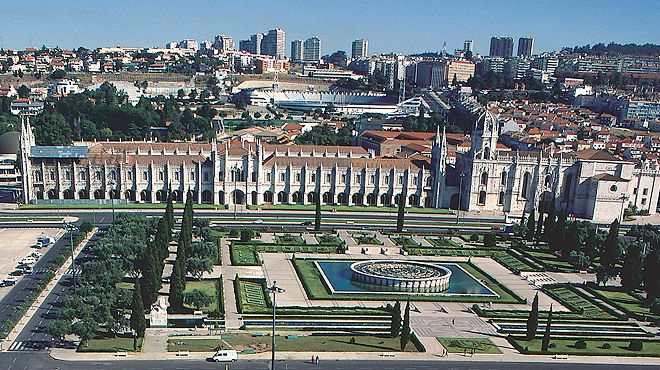

WELCOME TO THE CITY OF LISBON
Neighbourhood
Map of Lisbon
Directly below the red marker is the Baixa, stretching from the Rossio (Praça Dom Pedro IV) down to the riverbank of the Tejo (at the Praça do Comércio. The Baixa is the area of town which was rebuilt first after the earthquake of 1755, which destroyed that area almost entirely. As the result of a massive reconstruction project, headed by the Marquês de Pombal, it has an elegance and regularity of architectural style that most other areas of Lisbon don't have.
Heading towards the river the buildings get a little shabbier in places, and the shops older and odder, but it has a great, slightly run down charm. There are some wonderful shops here as well - for wine, try Napoleao at Rua dos Fanqueiros 70, where you can taste almost any bottle before you buy.Highlights are the squares at either end, with their equestrian statues and (in particular) the triumphal Arco da Victória facing the river. The Baixa is really for wandering, shopping and people watching.
To the left of that moving towards the top of the map up a steep hill away from the river are the Chiado and the Bairro Alto - the Chiado is a shopping/residential area. It's very smart, and very chic, and full of Lisbon charm. The shops here range from the big chain stores to little boutiques. You can wander up the gently sloping Rua Garrett, stopping for a coffee on the way. Alternatively, take the Elevador de Santa Justa from the Baixa up to the Rua Do Carmo. The views from the top of the Elevador are some of the best in the city, and you can also visit the Carmo Museum (which is just next door). One of the best museums in the city, it is housed in the ruins of a convent. Unrestored, roofless, and with roman and renaissance statuary scattered around its walls, it is a strangely charming place. There is an enclosed space at the back with a tiny but very interesting collection (including three mummies). There are some wonderful cafes and restaurants in the Chiado, generally full of people watching the passing parade.

Mosteiro dos Jeronimos
Coming out the the Chiado, up the hill still further, you reach the Bairro Alto. The Bairro is a very old residential area, with tiny cobbled streets laid out in a grid. It is full of cool shops selling clothes, shoes, bags, particularly by young or new designers, which generally open late, and stay open late. The Bairro also has many small restaurants, ranging from the pricey to local holes-in-the wall. Just look for the biggest concentration of people after midnight, buy a caipirinha and settle in to watch he passing parade. The Bairro does get noisy at night, and so may not be the best place to sleep, but it's very safe and exciting. Just west of the Chiado, the Bairro/Santa Catarina area shades into São Bento, a very interesting neighborhood full of antique shops, old book sellers and nice restaurants, further west Lapa is a fairly residential and posh area, finally Campo de Ourique it's a micro Lisbon with all sorts of quaint shops and nice restaurants. You can easily get to all those areas using tram 28 from Chiado. Still further west, beautiful Belém is reached easily using tram 15, Belém is packed with attractions - the Mosteiro dos Jeronimos (a beautiful, Manueline structure, with insane carvings), the Torre de Belem, a wonderful museum of antiquities and the best custard tarts in the world at Casa Pastéis de Belém.
On the other side of the Baixa, you will find the Alfama, Castelo and Graca areas. The Alfama is the oldest section of Lisbon, and moorish influences are everywhere. Castelo is dominated by the Castle, and has winding narrow streets which eventually lead through to Graca and its beautiful lookouts - along with Amoreiras the highest spots in the city. These areas are also very residential, scattered with restaurants and bars. The castle looms over the city and the area is well worth exploring, particularly the Panteão Nacional which is a beautiful building housing the tombs of Portugal's best and brightest.The Avenida da Liberdade stretches north west from the Rossio, through Restauradores, through Avenida and on to Marquês de Pombal. Just east of the Avenida de Liberdade is Pena, a little-known residential area between the Praça dos Restauradores and Martim Moniz, Pena is similar to traditional bairros such as Mouraria or Graça but with easier access to the Baixa and Bairro Alto.
Further north, and moving out of the centre of Lisbon, the area between São Sebastião and Saldanha is more business oriented, but also a good cheaper option for accommodation. The metro makes it easy to get into the city, and is cheap, reliable and easy to use. Even further north, there are a clutch of chain hotels (Marriot, Mercure, Novotel etc) in the Sete Rios area. Again, although these are outside the centre of the city, they can be a very good option, provided you are happy to spend a little time on the Metro. To the north east, the Parque das Nações area (the old World Expo site) is very new and shiny, but has many attractions, including the wonderful Oceanario, shopping centers and riverfront areas. Finally, a short train trip west of Lisbon, you will find the towns of Cascais and Estoril. Both are charming, with great beaches, small town atmosphere, and can be a very good option for those who don't want to stay in the city.